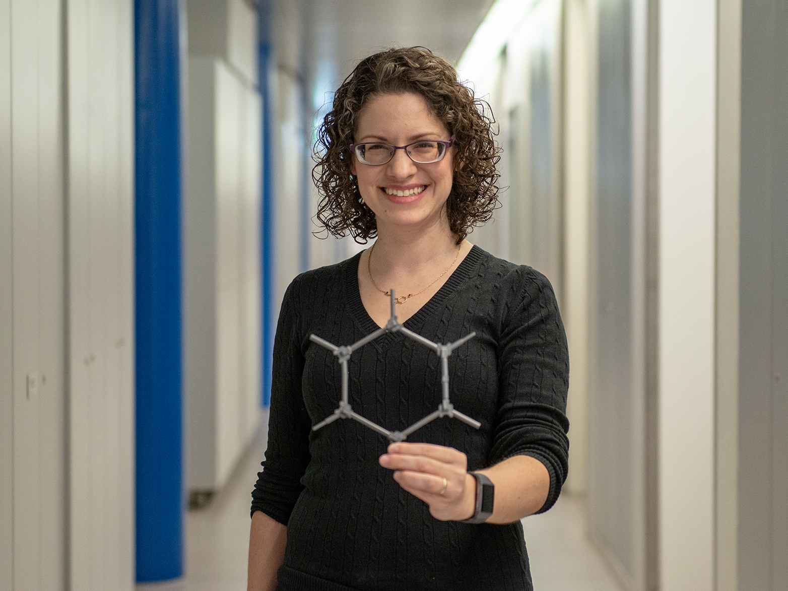

Renana Gershoni Poranne is an Associate Professor of Computational Chemistry at the Schulich Faculty of Chemistry at the Technion-Israel Institute of Technology. She joined the faculty in October 2021 as an Assistant Professor and a Branco Weiss Fellow, Horev Fellow, and Alon Scholarship recipient.
Before joining the faculty at the Technion, Renana was a Senior Scientist (Group Leader) in the group of Prof. Dr. Peter Chen at the Laboratorium für Organische Chemie at the ETH Zürich. Her promotion to Senior Scientist and Lecturer in July 2017 followed a two-year post-doctoral period (as a VATAT postdoctoral fellow) in the same group.
She completed her PhD studies under the supervision of Prof. Amnon Stanger in the Schulich Faculty of Chemistry at the Technion,
working on elucidation of the properties of aromatic compounds and developing methodologies for the identification and quantification of aromaticity in polycyclic aromatic hydrocarbons. Prior to that, she received her MSc Summa cum Laude for her work on functionlization of corannulene in the group of Prof. Ehud Keinan.
Renana's research interests lie in the field of computational physical organic chemistry, with particular emphasis on development of methods and tools for better understanding of the physical properties and reactivity of organic and organo-metallic compounds. The work in her group ranges from investigation of fundamental molecular properties and concepts—such as aromaticity, dispersion, metallophilic interactions, catalysis, and mechanism elucidation—to application of machine-learning and deep-learning models for molecular design of novel polycyclic aromatic systems and discovery of structure-property relationships.
On a personal note: Renana and her partner, Roi, are parents to two boys who were both born during Renana's PhD. She is a clasically trained soprano coloratura and loves different types of music. You will often find her humming some opera or country music tune. Renana is a voracious reader, an avid puzzle-solver, and an enthusiastic cake and cupcake baker.
More information may be found here: Full CV; Full List of Publications